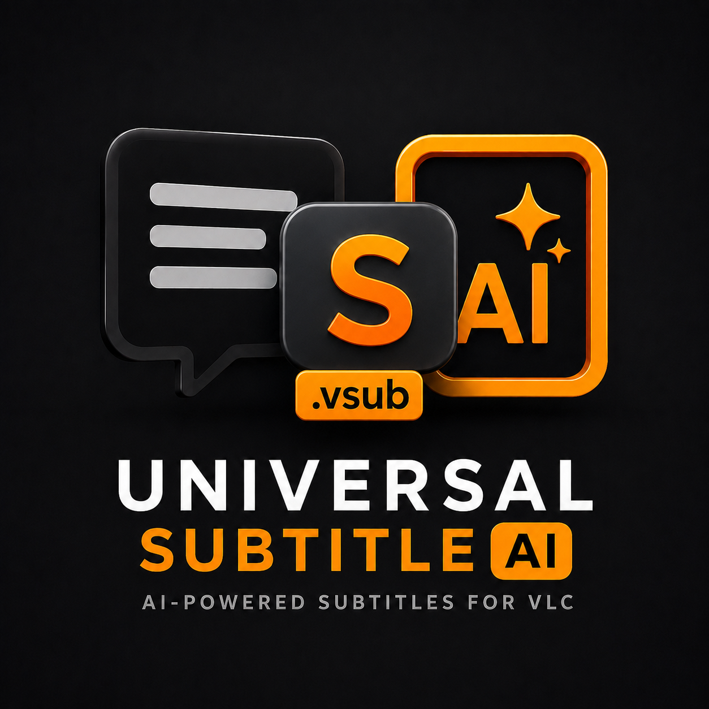

.png)
AI-Powered Subtitles
for VLC
Transcribe. Translate. Understand.
Generate highly accurate subtitles locally with AI — your files never leave your computer.


Everything You Need
Powerful AI subtitle generation built directly into your VLC workflow.
Automatic Transcription
Powered by advanced speech-to-text AI. Handles accents, background noise, and multiple speakers effortlessly.
Multi-Language Translation
Translate subtitles into dozens of languages instantly. Supports Manglish, Hinglish, and custom transliterations.
AI-Powered Accuracy
Choose from multiple AI providers including Groq for lightning-fast processing with exceptional accuracy.
SRT Export
Export subtitles in standard SRT format. Compatible with every major video player and editing tool.
Total Privacy
All processing happens locally on your machine. Your audio and video files never leave your computer.
VLC Integration
Seamlessly integrates with VLC Media Player. Generate and sync subtitles directly from the toolkit.
Universal Subtitle AI
Up and Running in Minutes
Three simple steps to start generating subtitles automatically.
Download & Install
Download the setup file and run the installer. It takes less than a minute.
Select Your Video
Browse for any video file. Choose your AI provider and target language.
Generate & Enjoy
Hit Generate and let AI do the work. Your SRT file is ready in seconds.
Ready to Transform Your Subtitling?
Download Universal Subtitle AI now — completely free.
Download for Windows